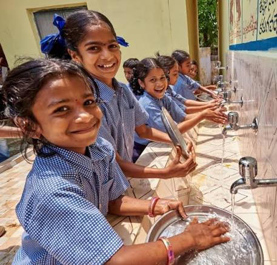
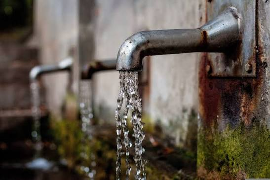
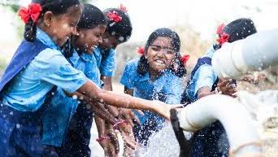
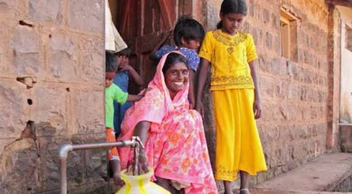
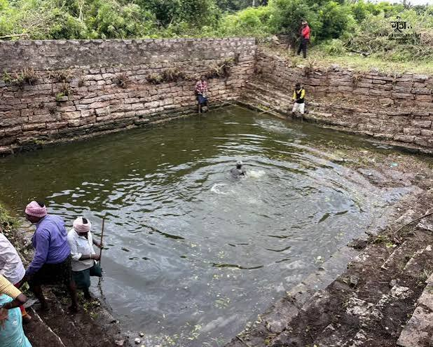
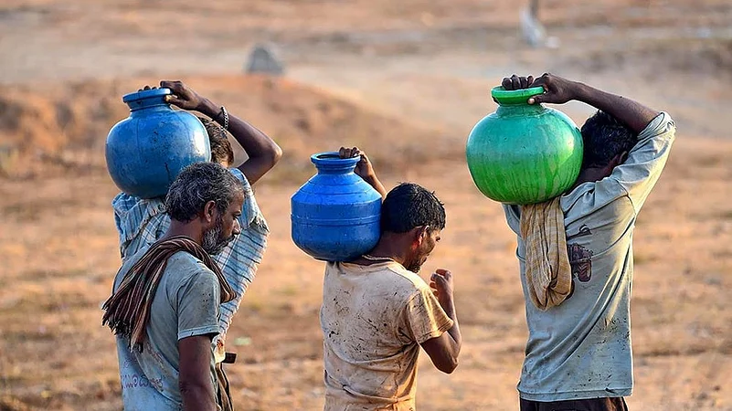

Access to Safe Drinking Water
Our organization has taken a proactive role in ensuring clean and safe drinking water reaches every household in rural villages. We have installed community-based water purification units and educated villagers on the importance of water hygiene.

Sanitation Awareness Programs
Sukruti has organized awareness drives across multiple villages to promote the use of toilets and discourage open defecation. These programs include skits, wall painting, group discussions, and door-to-door outreach to change sanitation habits sustainably.

Hand Hygiene Campaigns
With support from local schools and health departments, we have conducted workshops on handwashing techniques for school children and their families. These practices help reduce disease transmission and build healthy hygiene habits in communities.
Water & Sanitation Gallery
Water and sanitation activities carried out by Sukruti in communities.



Support Water & Sanitation Initiatives
Help support initiatives focused on safe water, sanitation awareness, and healthy hygiene practices.
Donate Now →